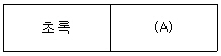
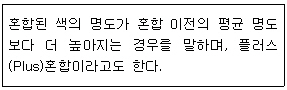
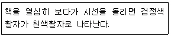
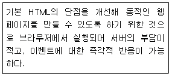
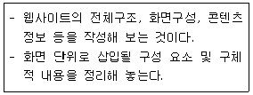
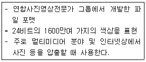

웹디자인기능사 (2008-03-30 기출문제)
1과목: 디자인 일반
1. 색의 주목성에 대한 설명으로 옳지 않은 것은?
- 명시도가 높으면 색의 주목성이 높다.
- 채도 차이가 클수록 주목성이 높다.
- 빨강은 초록보다 주목성이 높다.
- 명도와 채도가 낮은 색이 주목성이 높다.
(정답률: 88%)

2. 다음 중 색료의 3원색이 아닌 것은?
- 빨강(red)
- 마젠타(magenta)
- 노랑(yellow)
- 시안(cyan)
(정답률: 82%)
3. 빛의 스펙트럼에서 인간의 눈에 색상 기호로 인지되는 파장의 범위는?
- 180nm ~ 780nm
- 180nm ~ 1080nm
- 380nm ~ 780nm
- 380nm ~ 1080nm
(정답률: 92%)
4. 보색대비를 사용하려고 한다. (A)에 들어갈 알맞은 색은?(현재 보색표 자료가 누락되어 있습니다. 답은 "가"번입니다. 추후 수정해 두겠습니다.)

- 빨강
- 남색
- 노랑
- 연두
(정답률: 88%)
5. 고층 빌딩의 창문 크기, 고가도로의 난간 및 도로, 가로등을 원근법을 적용하여 표현하고 할 때 가장 유의해야 할 디자인 원리는?
- 점층
- 조화
- 대칭
- 균형
(정답률: 65%)
6. 균형의 가장 정형적인 구성 형식이며, 균형이 잘 잡힌 상태로 통일감을 얻기 쉬우나 딱딱한 느낌을 주는 원리는?
- 대칭
- 비대칭
- 비례
- 변화
(정답률: 88%)
7. 선(line)의 종류에 따른 느낌으로 잘못 설명한 것은?
- 사선 : 동적인 상태, 불안정
- 수평선 : 정지상태, 안정감
- 수직선 : 유연, 풍부한 감정
- 곡선: 우아, 섬세
(정답률: 90%)
8. "게스탈트 이론" 중 비슷한 모양이 서로 가까이 놓여 있을 때 그 모양들이 동일한 형태의 그룹으로 보이는 경향을 무엇이라고 하는가?
- 근접성의 법칙
- 유사성의 법칙
- 연속성의 법칙
- 폐쇄성의 법칙
(정답률: 57%)
9. 검정 바탕 위의 흰 색이 회색 바탕 위의 흰 색보다 더 밝게 보이는 대비효과를 무엇이라고 하는가?
- 색상 대비
- 명도 대비
- 보색 대비
- 한난 대비
(정답률: 77%)
10. 입체파(Cubism)의 대표적인 화가는?
- 피카소
- 쿠프베
- 찰스 자보
- 도미에
(정답률: 92%)
11. 다음이 설명하고 있는 색의 혼합은?

- 감색 혼합
- 가색 혼합
- 중간 혼합
- 회전 혼합
(정답률: 87%)
12. 다음 중 디자인 요소에 대한 설명으로 틀린 것은?
- 점 - 선의 한계 또는 교차
- 선 - 점이 이동한 것
- 면 - 1차원적인 요소
- 입체- 면이 이동한 것
(정답률: 63%)
13. 다음 중 2차원 디자인에 포함되지 않는 것은?
- 타이포그래피
- 일러스트레이션
- 애니메이션
- 편집디자인
(정답률: 80%)
14. 색입체를 단순화한 각 부분의 명칭이 맞는 것은? (단, A는 입체의 상하, B는 입체의 가로방향, C는 입체의 둘레를 의미한다.)
- A색상, B채도, C명도
- A채도, B명도, C색상
- A명도, B색상, C채도
- A명도, B채도, C색상
(정답률: 70%)
15. 다음 중 디자인 분야의 성격이 다른 것은?
- 인테리어 디자인
- 광고 디자인
- 편집 디자인
- 시각 디자인
(정답률: 76%)
16. 디자인 작업에 있어서 고려되는 일반적인 디자인 조건으로 거리가 먼 것은?
- 합목적성
- 심미성
- 경제성
- 교양성
(정답률: 92%)
17. 신인상파 화가인 쇠라(Georges Seurat)의 작품인 '그랑자트섬의 일요일 오후'에서 사용된 색의 혼합은?
- 회전혼합
- 가산혼합
- 색료혼합
- 병치혼합
(정답률: 75%)
18. 1907년 헤르만 무지테우스를 중심으로 뮌헨에서 결성된 디자인 진흥 단체는?
- 드 스틸(De Stijl)
- 독일공작연맹(DWB)
- 바우하우스(BAUHAUS)
- 멤피스(MEMPHIS)
(정답률: 83%)
19. 1931년 국제조명위원회에서 색의 단위와 체계를 정립하여 발표한 표색계는?
- 먼셀의 표색계
- 오스칼트 표색계
- CIE 표준 표색계
- KS사용 표색계
(정답률: 71%)
20. 다음이 설명하고 있는 현상은?

- 부의 잔상
- 정의 잔상
- 동화 현상
- 매스 효과
(정답률: 72%)
2과목: 인터넷 일반
21. 다음 중 웹 페이지를 디자인할 때 고려해야 할 사항이 아닌 것은?
- 사용자 개개인의 선호도나 사용수준에 맞춰 누구라도 쉽게 사용할 수 있도록 디자인한다.
- 사용자의 경험이나 학력, 언어능력 또는 집중력 정도에 차이를 두어 사용자 개개인 별로 난이도에 맞게 디자인한다.
- 사용자가 우연한 또는 의도하지 않은 선택의 결과로 어려움에 빠지는 경우를 최소화하도록 디자인한다.
- 사용자에게 필요한 정보를 효과적으로 전달하도록 디자인한다.
(정답률: 92%)
22. 다음 중 국내 검색엔진에 속하는 것은?
- www.google.com
- www.naver.com
- www.lycos.com
- www.galaxy.com
(정답률: 89%)
23. 다음 중 검색 엔진을 이용하여 정보 검색을 할 때 가장 많은 정보를 검색하는 경우는?
- 인터넷 AND 학교
- 인터넷 OR 학교
- 인터넷 NEAR 학교
- 인터넷
(정답률: 68%)
24. 자바 스크립트 언어의 기본적인 특성으로 옳지 않은 것은?
- 대소문자를 구분한다.
- 변수 이름에 공백 문자를 사용할 수 있다.
- 하나의 명령문이 끝나면, 세미콜론(;)을 기술한다.
- 변수 이름은 반드시 영문자 또는 밑줄(_)로 시작해야 한다.
(정답률: 69%)
25. 소스 코드가 HTML 문서 내에 포함되어 사용자의 브라우저에서 직접 번역되어 수행되는 것은?
- 자바 애플리케이션
- 자바 스크립트
- 자바 시큐리트
- 자바 빈즈
(정답률: 88%)
26. 다음 중 태그에 대한 설명이 잘못된 것은?
- <UL> : 순서가 없는 목록
- <OL> : 순서가 있는 목록
- <TR> : 표에서 행
- <TD> : 표에서 셀 제목
(정답률: 66%)
27. 웹 문서에 mp3 사운드 파일을 삽입하여 재생되도록 하고자 할 때 사용되는 태그는?
- <IMG>
- <EMBED>
- <BK>
- <MP3>
(정답률: 65%)
28. HTML문서에 자바스크립트를 삽입하는 방법으로 옳지 않은 것은?
- HTML문서의 <head>나 <body>태그(tag)사이에 소스를 직접 입력한다.
- 자바스크립트 소스를 확장자 .js 인 외부 파일로 저장하여 불러온다.
- 소스가 길어질 경우 함수로 이름을 지정해 호출하여 사용한다.
- HTML문서의 태그 내에 애플릿과 함께 사용한다.
(정답률: 57%)
29. 인터넷에서 사용되는 대부분의 사운드 파일은 주로 압축된 형태의 것들이다. 다음 중 인터넷에서 사용되는 사운드 파일 형식의 확장자가 아닌 것은?
- RA
- AIFF
- AU
- BMP
(정답률: 64%)
30. 인터넷의 시초는 어떠한 필요성에 의해 만들어졌는가?
- 군사적인 필요성
- 사업적인 필요성
- 학술적인 필요성
- 오락적인 필요성
(정답률: 82%)
31. 다음이 설명하는 것은 무엇인가?

- SGML
- VML
- DHTML
- WML
(정답률: 88%)
32. 인터넷 방화벽(fire wall)에 대한 설명으로 올바른 것은?
- 컴퓨터 프로그램에 잠입하여 컴퓨터로 하여금 본래 목적 이외의 처리를 하도록 하는 프로그램이다.
- 접근을 허가 받지 않은 정보 시스템에 불법 침투하거나 허가되지 않은 권한을 불법으로 갖는 경우를 말한다.
- 사용자에게 모든 소프트웨어를 합법적으로 사용할 수 있는 권한을 부여하는 것을 말한다.
- 내부 네트워크에 대한 접근을 제어하고, 집중화된 보안성을 향상시킬 수 있다.
(정답률: 82%)
33. 일반 전화선을 이용하고 전송거리가 짧은 구간에서 ADSL보다 빠른 전송 속도를 제공하며 대용량의 멀티미디어 콘텐츠를 처리할 수 있는 전송기술은?
- HADSL
- RDSL
- SDSL
- VDSL
(정답률: 74%)
34. 인터넷 용어 중 제품선전이나 성업적 용도로 자주 사용되는 무작위적인 메일 발송을 무엇이라 하는가?
- Hot Mail
- Mailing list
- Spam Mail
- Mail Bomb
(정답률: 91%)
35. 다음 중 프로그램의 성격이 다른 하나는?
- 인터넷 익스플로러
- 모질라
- 아파치
- 넷스케이프 네비게이터
(정답률: 59%)
36. 정보의 내용을 주제별 또는 종류별로 구분하여 메뉴를 구성함으로써, 제공되는 메뉴만 따라가면 쉽게 원하는 정보를 찾을 수 있게 해주는 계층적 문자 위주의 데이터베이스 서비스는?
- 텔넷(telnet)
- 고퍼(gopher)
- 백본(back bone)
- 서브넷 마스크(subnet mask)
(정답률: 63%)
37. 웹 페이지 제작 시 작업환경에서 보이는 그대로 결과물을 도출해 내는 방식은?
- GUI
- HCI
- MCP
- WYSIWYG
(정답률: 66%)
38. 전자우편(e-mail)을 전송할 때 사용되는 프로토콜은?
- FTP
- SMTP
- Telnet
- Usenet
(정답률: 82%)
39. 다음 중 데이터 통신의 교환 기술에 있어 전송 대역폭을 비교 기준으로 선택할 경우 다른 것과 구별되는 방식은?
- 메시지 교환 방식
- 데이터그램 패킷 교환
- 가상 회선 패킷 교환
- 회선 교환
(정답률: 51%)
40. HTML에 대한 설명으로 옳지 않은 것은?
- Hyper Text Markup Language
- 태그로 이루어져 있다.
- 파일의 확장자는 htm, html이 있다.
- 메모장으로는 작성이 불가능하다.
(정답률: 85%)
3과목: 웹그래픽스 디자인
41. 다음은 무엇에 관한 설명인가?

- 레이아웃
- 네비게이션
- 스토리보드
- 동영상
(정답률: 72%)
42. 컴퓨터 그래픽스 발달 과정 중 제 5세대에 관한 설명으로 옳은 것은?
- 약 18000개의 진공관으로 이루어진 컴퓨터인 애니악(ENIAC)이 개발되었다.
- 컴퓨터를 통해, 영상, 음성, 매체 등의 정보를 각 개인이 자유로이 이용할 수 있는 중합적인 컴퓨터 기술인 멀티미디어(Multimedia)가 발전하였다.
- 프렉탈 기법으로 간단한 형태에서 복잡한 형태로 표현이 가능하여 자연경관이나 혹성 표면을 실제와 같이 표현할 수 있게 되었다.
- 국제 컴퓨터 그래픽 협회읜 SIGRAPH가 결성되어 매년마다 컴퓨터 그래픽 애니메이션의 작품을 발표하였다.
(정답률: 64%)
43. 웹에서 주로 사용되는 컬러 방식은?
- CMYK
- RGB
- HSB
- LAB
(정답률: 85%)
44. 웹 디자인에서 사용자 인터페이스를 설정할 때 고려해야 할 사항으로 옳지 않은 것은?
- 최단 시간에 사이트를 방문한 목적을 이룰 수 있도록 한다.
- 웹페이지에서 다른 곳으로 이동 할 수 있는 링크를 한 곳으로만 지정한다.
- 화면을 스크롤 했을 때 링크 버튼이 보이지 않는 일이 없도록 한다.
- 누가 보더라도 쉽게 사용법을 알 수 있도록 사용자 편의성을 제공한다.
(정답률: 83%)
45. 2개의 서로 다른 이미지나 3차원 모델 사이의 변화하는 과정을 서서히 나타내는 것을 무엇이라 하는가?
- 모핑
- 로토스코핑
- 미립자 시스템
- 중첩 액션
(정답률: 76%)
46. 컴퓨터 그래픽스 시스템에서 정보표현의 최소 단위는?
- 비트(bit)
- 바이트(byte)
- 킬로바이트(KB)
- 메가바이트(MB)
(정답률: 86%)
47. 웹에서 타이포를 이용한 애니메이션을 구현할 수 있는 프로그램으로 적당하지 않은 것은?
- Swish
- Photoshop
- Flash
- Flax
(정답률: 72%)
48. 다음 중 컴퓨터 그래픽스가 활용되고 있는 분야로 거리가 가장 먼것은?
- 컴퓨터 게임
- CD 타이틀 디자인
- 공예 디자인
- 미디어 아트
(정답률: 85%)
49. 사용자 인터페이스 디자인 시 일반적으로 고려해야 할 사항으로 부적절한 것은?
- 사용 편리성 : 배우기 쉽고, 기억하기 쉬워야 한다.
- 심미적 구성 : 시각적인 커뮤니케이션을 통해 사용자의 정보흡수와 작업수행을 도와야 한다.
- 개인성 : 사용자의 경험이나 개인 선호도, 능력의 차이를 두고 개인의 특성에 맞도록 한다.
- 일관성 : 전체 구조 및 그래픽적 요소를 일관성 있게 디자인해야 한다.
(정답률: 76%)
50. 다음이 설명하고 있는 그래픽 파일 포맷은?

- GIF
- PNG
- JPEG
- BMP
(정답률: 65%)
51. 컴퓨터 그래픽스 시스템의 입력장치로 옳지 않은 것은?
- 디지타이저
- 타블릿
- 스캐너
- 플로터
(정답률: 79%)
52. 웹 디자인 프로세스 도입의 장점이 아닌 것은?
- 인력분배를 효율적으로 해준다.
- 피드백 및 실행착오를 최소화한다.
- 각 해당 팀(디자인, 프로그램 팀 등)간의 의사소통을 원활히 해 준다.
- 단계별로 진행해야 하기 때문에 전체 디자인 기간이 길어진다.
(정답률: 83%)
53. 저해상도 이미지에서 많이 나타나며 형태의 가장자리에 나타나는 계단현상을 무엇이라고 하는가?
- 모델링
- 클리핑
- 앨리어싱
- 해상도
(정답률: 88%)
54. 웹 상에서 반복되는 패턴으로 제작된 배경을 만들고자 할 경우 가장 적절한 방법은?
- 브라우저 크기에 맞는 이미지를 만들어 배경으로 삽입한다.
- 패턴을 만들고 <body> 태그 안에 background로 지정한다.
- 포토샵에서 CMYK 팔레트를 이용하여 jpg 이미지로 저장하여 사용한다.
- CSS의 스타일을 이용하여 background의 옵션을 no-repeat으로 지정한다.
(정답률: 73%)
55. 물체 경계면의 픽셀을 물체의 색상과 배경의 색상을 혼합해서 표현하여 경계면이 부드럽게 보이도록 하는 기법은?
- Antialiasing
- Dithering
- Telecine
- Compositing
(정답률: 78%)
56. 다음 중 웹 디자인 과정(process)에서 가장 먼저 선행되어야 할 작업은 무엇인가?
- 작업할 내용을 무엇으로 할 것인가 하는 주제를 선정해야 한다.
- 내용과 부합되는 사이트를 분석하고 자료를 모은다.
- 콘티를 작성하고 스토리보드를 제작한다.
- 전체적인 내용을 구성하여 레이아웃을 입력해 본다.
(정답률: 77%)
57. 요구된 색상의 사용이 불가능 할 때, 컴퓨터 프로그램에 의해 다른 색상들을 섞어서 비슷한 색상을 내는 방법을 무엇이라 하는가?
- 그라데이션(Gradation)
- 랜더링(Rendering)
- 디더링(Dithering)
- 모자이크(Mosaic)
(정답률: 65%)
58. 파일 포맷 중 LZW(Lempel-Ziv-Welch)라고 알려진 압축 알고리즘을 사용하여 사진이미지 보다는 색상이 단순한 그래픽에 더 효과적인 파일 포맷은?
- BMP
- GIF
- PNG
- JPEG
(정답률: 54%)
59. 모니터 해상도를 나타내는 픽셀에 관한 설명으로 틀린 것은?
- Picture와 Element의 합성어이다.
- 이미지의 최소단위이다.
- DPI는 Dot Pixel Inch의 약자이다.
- PPI는 Pixel Per Inch의 약자이다.
(정답률: 62%)
60. 확장자가 psd인 파일을 생성하고 수정할 수 있는 것은?
- Flash
- Illustrator
- Paint shop pro
- Photoshop
(정답률: 87%)